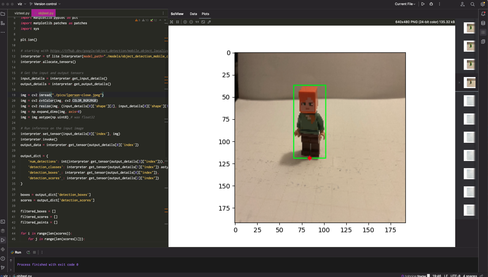

The second challenge in the computer vision side of the project is spotting people as they walk through the field...
As the participant moves through the field like a pollinator, they will be surrounded by a wave of light and musical tones that ripple through a field of oversize flowers. The waves of sound and color will expand from them like ripples in water, scaled to their walking speed, splashing into other waves.
Individual Flower Examples